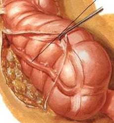
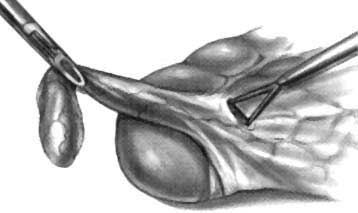

Appendicectomy
:
Laparoscopic
What are the benefits / disadvantages over open surgery?
Nearly equivalent in safety and efficacy
Most series report:
- less post-operative pain.
- more rapid return to normal activity & diet.
- shorter hospital stay (1d)
- longer operating time.
- more expense (may be balanced by shorter stay).
- better cosmesis
- lower wound infection rate (and overall wound complications)
- intra-abdo abscess rates ~2-3% for either, but may be higher with
laparoscopy if perforation present (?adequacy of washout)
Cochrane review therefore concluded no definite advantages
- but that overall lap appendicectomy is probably preferable unless
laparoscopy is contraindicated.
What are contraindications?
Appendix abscess should not be managed operatively (more soilage,
riskier to bowel).
What about perforation?
Fine.
When should it be performed?
Safe and effective in all.
Esp. women of reproductive age
- safe not to proceed with appendicectomy if normal and another path
found.
Esp in obese as risk of wound morbidity significantly higher.
Also good benefit in those that are employed
What are other relative contraindications?
Previous abdo surgery preventing safe trochar placement.
Uncontrolled coagulopathy / cardiopulmonary instability.
Sig. portal hypertension.
Pregnancy >20wks (uterus reaches umbilicus; view poor and risk of
uterus trochar injury).
Immunosuppression - use with caution.
Technique
GA, relaxation, supine / lithotomy.
If there is doubt about the status of the bladder, empty with in-out
catheterisation.
Examine the abdo: a mass may suggest a difficult procedure.
Establish Laparoscopic Access.
10mm umbilical Hassan.
Trendelenburg position improves visualization of pelvis &
appendix.
Trochar options:
- depends.
- routinely i do 2x 5mm midline ports, one over suprapubic region.
- change to a 5mm scope for removal of appendix.
- alternatively 10 mm distal port is fine.
- often a third port above the umbilicus to retract ascending colon
if retrocaecal.
Using an atraumatic grasper in the R hand, retract the caecum
medially / superiorly.
- this should show appendix.
- if retrocaecal, the lateral peritoneal reflection of the caecum
must be mobilized.

Using atraumatic grasper in left hand / Babcocks, grasp tip of
appendix.
- the sucker is a good blund dissection tool to break down
inflammatory adhesions.
- place under tension, up toward abdominal wall.
- may need a third instrument port to aid mobilisation / dissection
esp if retrocaecal.
The mesoappendix is taken down with either haemoclips or diathermy.
- in the case of clips, make a window at the base with Marylands and
clip across as possible.
- endoscopic stapling ideal but not routinely used to keep cost low.

In the case of diathermy, start near the tip
- find the plane close to the appendix.
- vessels here are small and safely taken with diathermy.
- buzz down with hook diathermy until base reached, keeping under
tension with left hand.
Loop x3 base chromic / vicryl.
- vicryl gets sticky, chromic can be stiff.
- cut between distal and middle loops.
Retrieve appendix through 10mm port to avoid infection / expense of
endocatch bag.
- leave the mesentery.
- some prefer two 5mm ports and taking the appendix through the
umbilicus with the suprapubic tool +/- finger of glove.
Can dab the stump with a bit of betadine-soaked gauze.
Close.
The appendix is friable and
perforated.
Tie an endo-loop below the perf, leave sufficient length to be
grasped with forceps.
- prevents spread of intraluminal contents out.
Place appendix in a bag if required.
Suction / irrigate liberally.
- pelvic, sub-hepatic, subphrenic especially.
The appendix looks normal, do I
remove it?
In the abscence of other pathology, this is probably wise.
- there is a chance of early appendicitis not yet grossly visible.
With other clear pathology, it is safe to remove it.
- some say remove it always to prevent diagnostic confusion when the
pt represents with RIF pain.
Do I close deep layers at 10mm
port sites?
Ideally.
What is the conversion rate?
Very low these days. <5%.